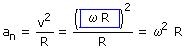
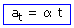

Aceleraciones del movimiento circular
Aceleración normal
Está asociada al cambio de dirección
El vector an tiene la dirección del radio, apunta hacia
el centro de la circunferencia y su módulo vale:

Aceleración tangencial
Está asociada al cambio de rapidez
El vector at tiene la dirección de la tangente en cada punto y
sentido igual o contrario al de la velocidad según se trate de
un movimiento acelerado o frenado. Su módulo vale:

Aceleración total
Es la resultante vectorial de las aceleraciones normal y tangen-cial
 |